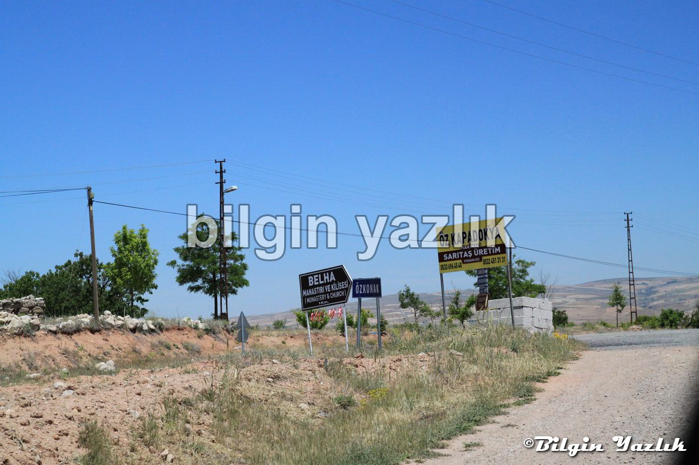
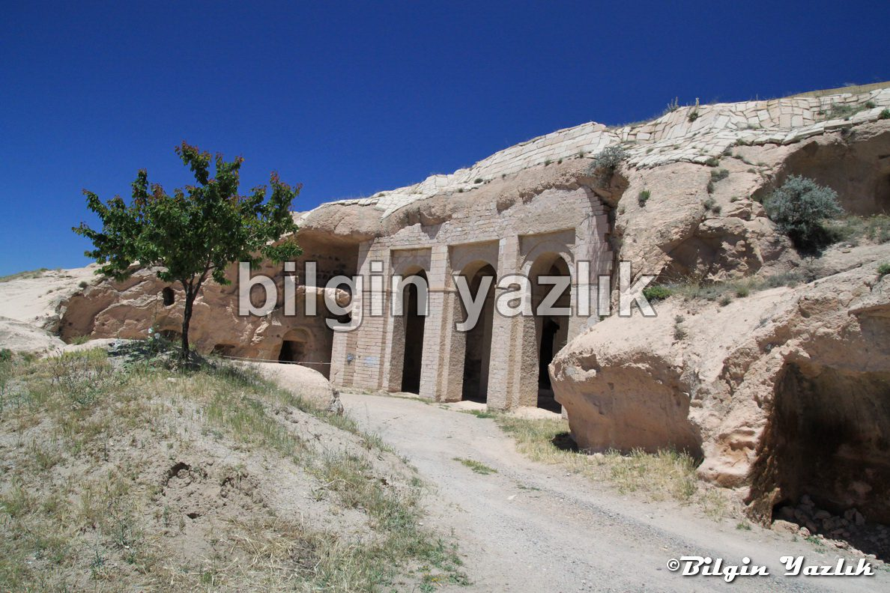
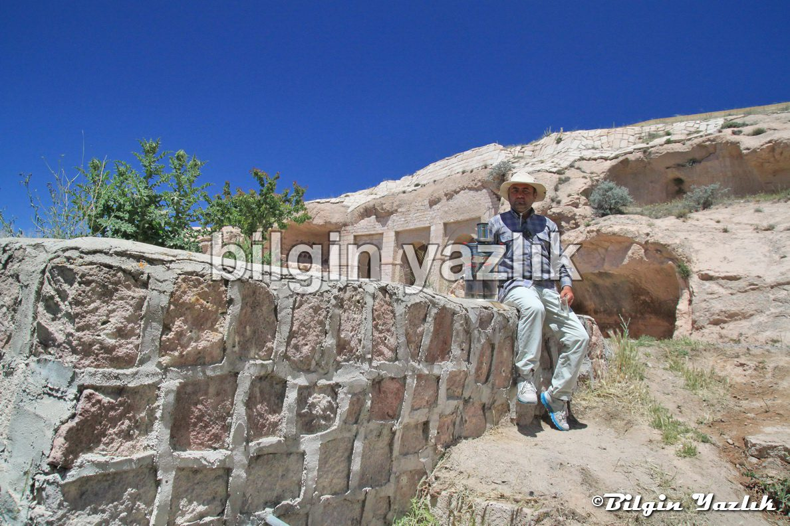
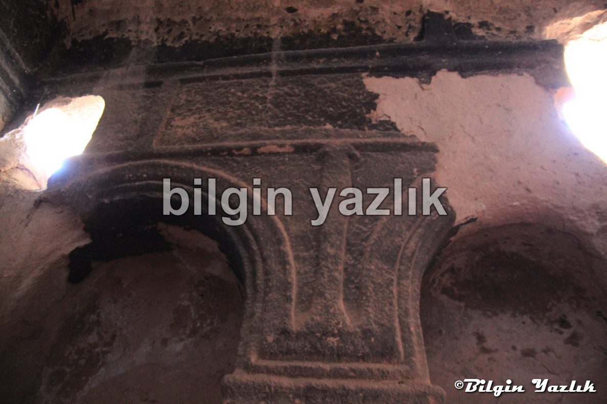
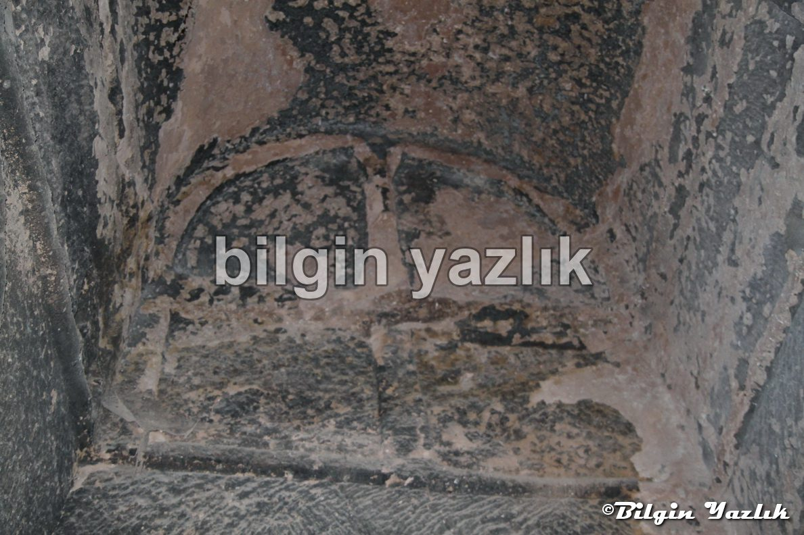
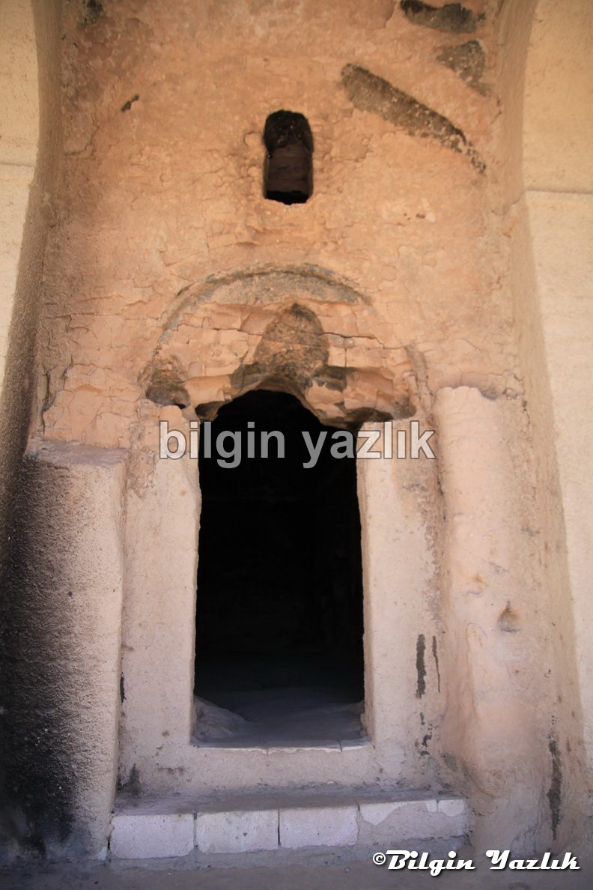
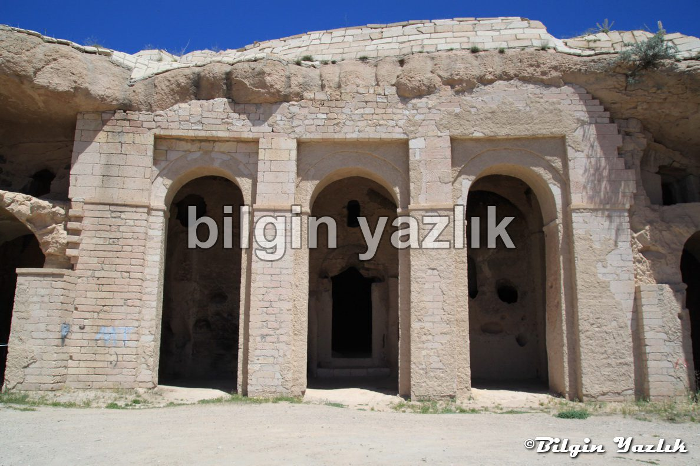

Kapadokya · 13 Haziran 2014
Belha Manastırı
Kapadokya bölgesinde, Özkonak beldesi sınırları içerisinde yer alan bu manastır 4. yy’da Bizanslılar tarafından inşa edilmiş.
Bölgenin en seçkin papazlarının burada yetiştiği iddia edilmektedir.
Manastıra giden yol stabilize olup bakım ihtiyacı bulunmaktadır.
Turizm sevdalısı Özkonaklı Serkan Erden ile manastırda karşılaştım.
Kendisi bu manastırın turizme kazandırılması için çok çaba sarfettiğini ve şu anda gönüllü olarak manastırı korumaya çalıştığını belirtti.
Her daim demli çayı hazır olan Serkan Bey, manastırın kapısında sizler karşılayacak.
Konum: 38 47′ 26” K, 34 49′ 27” D







Bu yazı taliyol arşivinden taşınmıştır. · özgün kayıt